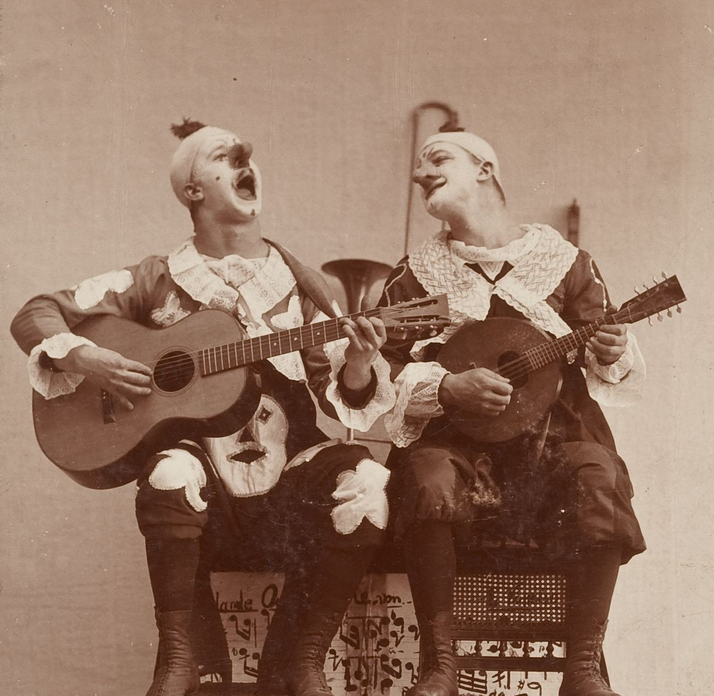
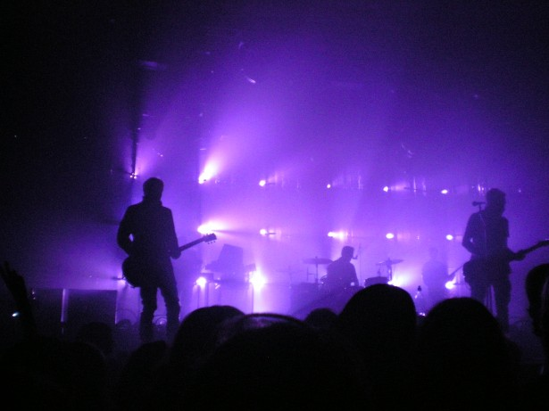
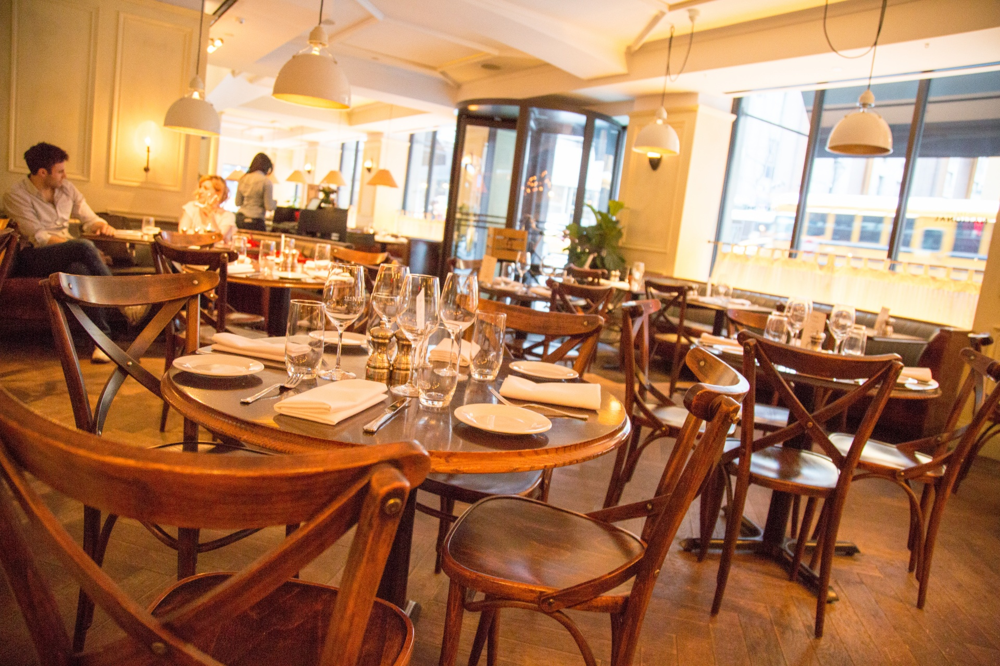

Welcome to Pensacola!
Home of the Blue Angels.
Thanks for visiting Underground Pensacola, a source for a few activities you can do while you visit Pensacola! Below describes the activities we provide information for with links to said pages both in the descriptions, or on our navigation bar. If you are on your phone, only on the pages will you find links to the certain activities/locations. Be sure to check them out!
Until then, enjoy this short video on things to do in Pensacola by Visit Pensacola!
Art/Activities
Feel like viewing great quality plays? Or enjoying a good improvisation show while you sit in a grand auditorium? Maybe you just want to take a break from the big crowds and enjoy some bowling with your buddies. Whatever it may be you will find all the information you need about some fun activities and art establishments here. Click here to go to Arts/Activities
Music/Dancing
Maybe being stationary isn't your thing and you just wanna get your groove on. Perhaps you want to listen to great artists or dance it out in a club with others. Our Music/Dancing section is perfect for finding those wonderful places to go to that will cater to the music troll in your soul! Click here to go to Music/Dancing
Dining
Feeling famished? Pensacola is home to a plethora of different food locations, as well as tons of different types of food. Whatever you are in the mood for, we are surely packing that type of food. Visit here if you are looking for a delicious solution to your hunger needs. Click here to go to Dining